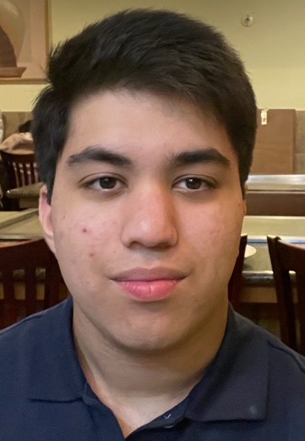

I'm a
As CTO (Chief Technology Officer) at Jdable, I am leading the development of inclusive AI-powered tools and engineering solutions to support people with visual and motor disabilities. We've collaborated with over 15 accessibility-focused organizations and reached more than 150,000 people through social platforms. Our work has been presented at several conferences, with a direct impact on over 2,500 individuals. Backed by $750K+ in funding and assets, we've launched 10 major assistive tech projects and raised over $50K in donations.
As CTO (Chief Technology Officer) at Reteena, I am leading research and development for Remembrance, a neuro-inspired AI therapy platform supporting patients with Alzheimers through emotionally intelligent memory care. Backed by Microsoft and Hack Club, we have raised over $250K in pre-seed funding and published our work in ICLR and IEEE. I manage a team of 50 developers building LLM-powered, graph-based memory systems, while driving long-term technical strategy, partnerships, and innovation in therapeutic AI.
I conduct research at Harvard University, where I develop machine learning models for surgical intelligence and disease detection, focusing on clinical applications of AI in healthcare. At Columbia University, I work on computational models of cognition, exploring sensory perception and decision-making through deep learning and neural data analysis. At Princeton University, I help redesign tools for large-scale neural circuit reconstruction, combining React-based frontend development with segmentation-focused machine learning to enhance analysis of high-resolution neuron data. At NASA, I contribute to space biology research, investigating how long-duration spaceflight affects neurodegeneration and modeling retinal changes using AI-driven simulations. At the University of Illinois Urbana-Champaign, I apply deep learning and few-shot learning to ECG data, building interpretable models for rare cardiac conditions like Brugada Syndrome. At the Broad Institute and MIT, I’m developing AI systems for cognitive cartography, integrating behavioral, neural, and genomic data to model human cognition. At Memorial Sloan Kettering Cancer Center, I apply machine learning to understand proteome dysfunction in cancer, focusing on epichaperome networks and stress-induced molecular rewiring. At the University of California, Santa Cruz, I’m building explainable AI models inspired by neurobiology, exploring continuous-time dynamics and active inference frameworks for modular cognition in artificial systems.
Outside of research, I am Venture Fellow and help with growth at Ultra (YC W24), where I help scout high-potential early-stage founders and source startups for investment. I also lead policy initiatives as Team Lead for Technology at the Institute for Youth in Policy, coordinating a team to write briefs on AI governance, cybersecurity, and digital infrastructure. As Director of Education at the International Youth STEM Society, I develop national STEM curriculum and partner with educators to expand access to interdisciplinary science education. Additionally, I coordinate a 250-person Model UN and Youth and Government delegation through the YMCA, which has been recognized as a premier delegation under my leadership.
I'm driven by the intersection of machine learning, computational biology, assistive tech, policy, and biomedical engineering. Always happy to connect.